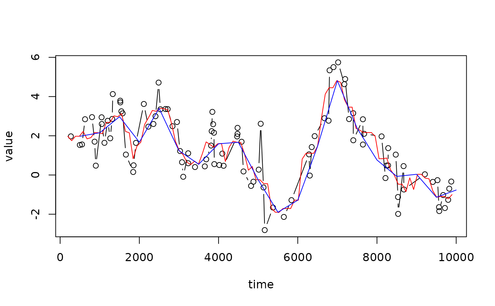

Regularise and smooth an irregular timeseries.
SmoothIrregular.RdRegularise and smooth an irregular timeseries.
Arguments
- df
A dataframe with columns of ages and values
- time.var
A quoted string giving the name of the age column
- value.var
A quoted string giving the name of the value column
- tau_smooth
Width of the boxcar / uniform smoothing window
- d_t
Difference between time steps of new regular time series
Examples
set.seed(20191205)
n <- 100
dat <- data.frame(time = sort(runif(n, 1, 1e04)),
value = arima.sim(list(ar = 0.9), n = n)
)
plot(dat, type = "b")
dat.smoothed <- SmoothIrregular(dat, "time", "value", tau_smooth = 500)
dat.smoothed.2 <- SmoothIrregular(dat, "time", "value", tau_smooth = 500,
d_t = 500)
lines(mean.value~age, data = dat.smoothed, col = "Red")
lines(mean.value~age, data = dat.smoothed.2, col = "Blue")

head(dat.smoothed)
#> age mean.value n mean.d_t tau_smooth
#> 1 194.0280 1.971426 1 500.00000 500
#> 2 291.0419 1.751131 2 250.00000 500
#> 3 388.0559 1.976105 4 125.00000 500
#> 4 485.0699 1.976105 4 125.00000 500
#> 5 582.0839 2.221144 4 125.00000 500
#> 6 679.0978 1.843450 6 83.33333 500